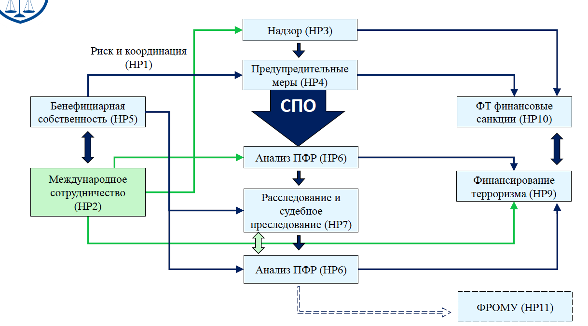

Лекция 3. Международные стандарты ПОД/ФТ/ФРОМУ¶
Международные стандарты ПОД/ФТ/ФРОМУ¶
Рекомендации ФАТФ устанавливают комплексную и последовательную структуру мер которые странам следует применять для ПОД/ФТ/ФРОМУ
определять риски и разрабатывать политику и координацию внутри страны
преследовать отмывание денег, финансирование терроризма и финансирование распространения оружия массового уничтожения
применять превентивные меры для финансового сектора и определенных иных секторов
устанавливать полномочия и ответственность компетентных органов (следственных, правоохранительных и надзорных органов) и иные институциональные меры
укреплять прозрачность и доступность информации о бенефициарной собственности юридических лиц и образований
обеспечивать международное сотрудничество
Стандарты ФАТФ¶
В Рекомендациях ФАТФ установлены минимальные требования касающиеся мер, которые должны быть реализованы странами для борьбы с ОД и ФТ
Эффективное выполнение Рекомендаций ФАТФ обеспечивает эффективную базу для противодействия ОД и ФТ
Поскольку террористы и другие преступники всегда будут использовать самое слабое звено, необходимо последовательное выполнение Рекомендаций всеми странами
Страны лучше всех могут судить об угрожающих им рисках ОД и ФТ и должны обеспечить, чтобы реализуемые ими меры ПОД/ФТ были направлены на надлежащее снижение таких рисков
Методология оценки технического соответствия Рекомендациям ФАТФ и эффективности систем ПОД/ФТ¶
Для четвёртого раунда взаимных оценок ФАТФ приняла взаимодополняющие подходы к оценке технического соответствия Рекомендациям ФАТФ и оценке того, является ли система ПОД/ФТ эффективной и до какой степени
Методология оценки технического соответствия Рекомендациям ФАТФ и эффективности систем ПОД/ФТ предназначена для оказания содействия экспертам-оценщикам при проведении оценки соблюдения страной международных стандартов ПОД/ФТ
Отражает требования, изложенные в Рекомендациях ФАТФ и Пояснительных записках, которые устанавливают международный стандарт противодействия отмыванию денег и финансированию терроризма и распространения ОМУ, не изменяя и не превышая эти требования
При подготовке Методологии использован опыт проведения оценок соответствия более ранним версиям Рекомендаций ФАТФ, накопленный ФАТФ, Региональными группами по типу ФАТФ (РГТФ) Международным Валютным Фондом и Всемирным Банком
Риск ориентированный подход и оценка рисков (Р.1)¶
Странам следует определить и оценить риски отмывания денег и финансирования терроризма и следует предпринять шаги в том числе, определив орган или механизм по координации мер по оценке рисков, а также распределить ресурсы с целью эффективного снижения этих рисков
На основе этой оценки странам следует применять риск ориентированный подход (РОП) для того, чтобы меры по предупреждению отмывания денег и финансирования терроризма соответствовали выявленным рискам Этот подход должен стать основой для эффективного распределения ресурсов в рамках национального режима ПОД/ФТ и применения риск ориентированных мер в соответствии с Рекомендациями ФАТФ Там, где страны выявили более высокие риски, им следует обеспечить, чтобы их режим ПОД/ФТ адекватно реагировал на них
Там, где страны выявили более низкие риски, они могут решить применять упрощённые меры для некоторых из Рекомендаций ФАТФ при определённых условиях
Страны должны требовать, чтобы финансовые учреждения и установленные нефинансовые предприятия и профессии (УНФПП) определяли, оценивали и принимали меры по снижению собственных рисков отмывания денег и финансирования терроризма
Новое понимание риск ориентированного подхода¶
Р.1 - новая Рекомендация по РОП, которая устанавливает принципы и требования к её применению
РОП применяется ко всем Рекомендациям ФАТФ
Ряд аспектов РОП прямо прописаны в Рекомендациях (например, Р.10 (НПК))
Устанавливает требования для стран, финансовых учреждений и УНФПП
Оценка рисков¶
Страны должны выявлять, оценивать и понимать риски ОД/ФТ
Финансовые учреждения и УНФПП должны выявлять, оценивать, понимать риски ОД/ФТ и разрабатывать программы по их снижению и управлению
Оценка рисков основа для любого режима ПОД/ФТ (для управления рисками, их снижения, применения дополнительных мер при высоко рисковых сценариях эффективного распределения ресурсов)
ФАТФ разработано Руководство по национальной оценке рисков как глобальное, так и секторальное
Риск ориентированный подход¶
Основные принципы
Высокий риск \(\rightarrow\) требуются усиленные меры
Низкий риск \(\rightarrow\) возможны упрощённые меры
Задачи
Фокус на более высоких рисках для более эффективной реализации Рекомендаций
Более эффективное распределение и использование ресурсов
Отмывание денег и конфискация (Р.3 и Р.4)¶
Основные последствия
определение компетентных органов, отвечающих за расследование ОД и предикатных преступлений, включены налоговые органы
международное сотрудничество
направление сообщений о подозрительных операциях
Расширен список предикатных преступлений для отмывания денег, в который теперь входят серьёзные (тяжкие) налоговые преступления
Дополнительная установленная категория преступлений: налоговые преступления (связанные с прямыми и косвенными налогами)
Уточнено - контрабанда (в отношении таможенных и акцизных налогов и сборов)
Введение конфискации без осуждения
Определение серьёзных (тяжких) налоговых преступлений оставлено на усмотрение каждой страны, но оно оставлено
Целевые финансовые санкции, относящиеся к ОМУ (Р.7)¶
Страны должны применять адресные финансовые санкции (замораживание (незамедлительно) + запрет), предусмотренные соответствующими Резолюциями СБ ООН, касающимися распространения ОМУ аналогично требованиям, касающимся терроризма и финансирования терроризма физические и юридические лица могут включаться в списки Советом Безопасности ООН в соответствии с
Резолюцией СБ ООН 1718 и принятыми в её развитие Резолюциями (КНДР)
Резолюцией СБ ООН 1737 и принятыми в её развитие Резолюциями (Иран)
Сотрудничество и взаимодействие на национальном уровне.
Требуется участие органов, отвечающих за противодействие финансированию распространения ОМУ.
Публичные должностные лица (Р.12)¶
Существующие меры для иностранных публичных должностных лиц остались неизменными (применяются усиленные меры по НПК)
Положения Рекомендации охватывают теперь и национальных публичных должностных лиц и из международных организаций
Меры для национальных публичных должностных лиц и из международных организаций применяются на основании РОП ТОЛЬКО в высоко рисковых ситуациях Если публичное должностное лицо признается высоко рисковым, то применяются усиленные меры по НПК
Бенефициарные владельцы: требования ФАТФ¶
Требования ФАТФ в отношении бенефициарных владельцев были пересмотрены
Третий раунд взаимных оценок показал низкий уровень соответствия требования по идентификации и верификации БВ и хранению информации о них
Однако основной принцип остался неизменным: компетентные органы должны иметь своевременный доступ к точной информации о бенефициарных владельцах
Обеспечить своевременный доступ к достаточной, точной и актуальной информации о бенефициарной собственности и контроле компаний и других юридических лиц (информация о бенефициарном владении), созданных в стране
Процедуры взаимной оценки национальных антиотмывочных систем¶

Эффективность - 11 «Непосредственных результато⻶
Методологии оценки технического соответствия Рекомендациям ФАТФ и эффективности систем ПОД/ФТ определяют эффективность
применения 40 Рекомендаций ФАТФ
работы системы ПОД/ФТ
Непосредственный результат 1 - Риск и координация¶
Риски ОД и ФТ понимаются и, при необходимости, координируются внутри страны для борьбы с ОД, ФТ и ФРОМУ
Насколько хорошо страна понимает свои риски?
Насколько хорошо устраняются риски?
Есть ли прочная основа для изъятий, упрощённых мер и усиленных мер?
Насколько хорошо власти сотрудничают и координируются?
Насколько осведомлены о рисках финансовые учреждения и УНФПП?
Непосредственный результат 2 - Международное сотрудничество¶
В рамках международного сотрудничества предоставляется соответствующая информация, данные финансовой разведки и доказательства, а также облегчается принятие мер против преступников и их активов
Насколько эффективно страна оказывает взаимную юридическую помощь (ВЮП)?
Насколько эффективно страна запрашивает ВЮП?
Насколько эффективно страна запрашивает другие виды помощи?
Насколько эффективно страна оказывает другие виды помощи?
Насколько эффективно страна предоставляла информацию о бенефициарной собственности?
Непосредственный результат 3 - Надзор¶
Надзорные органы надлежащим образом проводят мониторинг, контролируют и регулируют финансовые учреждения и УНФПП на предмет соблюдения требований ПОД/ФТ, соразмерных их рискам
Насколько эффективно страна не допускает владение ФИ и УНФПП преступниками и их сообщниками?
Насколько хорошо надзорные органы понимают риски?
Насколько эффективно надзорные органы следят за соблюдением финансовыми учреждениями и УНФПП требований ПОД/ФТ?
В какой степени применяются меры и/или санкции?
Могут ли надзорные органы продемонстрировать степень влияния на эффективность соответствия?
Способствуют ли надзорные органы пониманию финансовыми институтами и УНФПП рисков?
Непосредственный результат 4 - Предупредительные меры¶
Финансовые учреждения и УНФПП адекватно применяют превентивные меры в области ПОД/ФТ, соразмерные их рискам, и сообщают о подозрительных операциях
Насколько хорошо ФИ и УНФПП понимают свои риски и обязанности?
Насколько эффективно они применяют меры по снижению рисков?
Насколько эффективно они применяют меры НПК и хранят данные? Отказывают бизнесу?
Насколько эффективно применяются специальные меры? (например, по ПДЛ, корреспондентскому банкингу, правилам электронных переводов, финансовым санкциям)
Насколько хорошо они выполняют свои обязательства по предоставлению отчётности?
Насколько хорошо они применяют внутренний контроль?
Непосредственный результат 5 - Бенефициарная собственность¶
Не допускается неправомерное использование юридических лиц и образований в целях ОД или ФТ, и компетентные органы могут беспрепятственно получать информацию об их бенефициарной собственности
Доступна ли информация о видах юридических лиц и образований?
Насколько хорошо власти понимают потенциальное злоупотребление юридическими лицами?
Насколько эффективно страна предотвращает злоупотребления?
Могут ли органы власти получить информацию о юридических лицах?
Могут ли власти получить информацию о юридических образованиях?
Насколько эффективно применяются санкции за несоблюдение норм?
Непосредственный результат 6 - Финансовая разведка¶
Данные финансовой разведки и вся другая соответствующая информация надлежащим образом используются властями для проведения расследований ОД и ФТ
В какой степени данные финансовой разведки используются в расследованиях?
Насколько полезны отчёты для правоохранительных органов?
В какой степени анализ ПФР поддерживает оперативные потребности?
В какой степени ПФР и другие компетентные органы сотрудничают?
Непосредственный результат 7 - Расследование и судебное преследование ОД¶
Преступления и деятельность ОД расследуются, а правонарушители подвергаются судебному преследованию и эффективным, соразмерным и сдерживающим санкциям
Насколько хорошо выявляются и расследуются потенциальные случаи ОД?
Согласуются ли виды расследуемой деятельности с профилем рисков страны?
В какой степени преследуются различные виды ОД и осуждаются правонарушители?
Применяются ли эффективные, соразмерные и сдерживающие санкции?
Применяют ли страны другие меры уголовного правосудия в тех случаях, когда невозможно добиться обвинительного приговора по ОД?
Непосредственный результат 8 - Конфискация¶
Доходы и средства совершения преступлений конфискуются
Преследуется ли конфискация доходов от преступной деятельности в качестве политической цели?
Насколько хорошо компетентные органы конфискуют доходы от преступлений (включая внутренние и внешние преступления и доходы, которые были перемещены в другие страны)?
В какой степени конфискация применяется в отношении ложных заявлений?
Насколько хорошо результаты отражают риски ОД/ФТ?
Непосредственный результат 9 - Расследование и судебное преследование ФТ¶
Преступления и деятельность, связанные с финансированием терроризма, расследуются, а лица, финансирующие терроризм, подвергаются судебному преследованию и эффективным, соразмерным и сдерживающим санкциям
В какой степени преследуются различные виды деятельности ФТ? Соответствует ли это профилю риска ФТ страны?
Насколько эффективно выявлены и расследованы случаи ФТ?
Расследование ФТ интегрировано в национальные стратегии по борьбе с терроризмом и расследования?
Применяются ли эффективные, соразмерные и сдерживающие санкции?
В тех случаях, когда невозможно добиться осуждения по ФТ, используются ли другие меры для пресечения деятельности ФТ?
Непосредственный результат 10 - Предупредительные меры ФТ¶
Террористы, террористические организации и спонсоры террористов не могут собирать, перемещать и использовать средства, а также неправомерно использовать НКО
Насколько эффективно страна применяет целенаправленные финансовые санкции?
Насколько эффективно страна действует в отношении НКО, подверженных риску неправомерного использования в целях ФТ?
В какой степени террористы, террористические организации и спонсоры террористов лишены активов?
Соответствует ли это общему профилю риска ФТ?
Непосредственный результат 11 - Финансирование распространения оружия массового уничтожения (ФРОМУ)¶
Лицам и организациям, участвующим в распространении ОМУ, запрещается собирать, перемещать и использовать средства согласно соответствующим Резолюциям СБ ООН
Насколько эффективно страна применяет целенаправленные финансовые санкции в отношении распространения ОМУ?
В какой степени выявленные и внесённые в список лица лишены права осуществлять операции?
Насколько хорошо финансовые учреждения и УНФПП понимают и выполняют свои обязательства?
Насколько хорошо власти контролируют соблюдение требований?
Как соотносятся между собой НР¶
